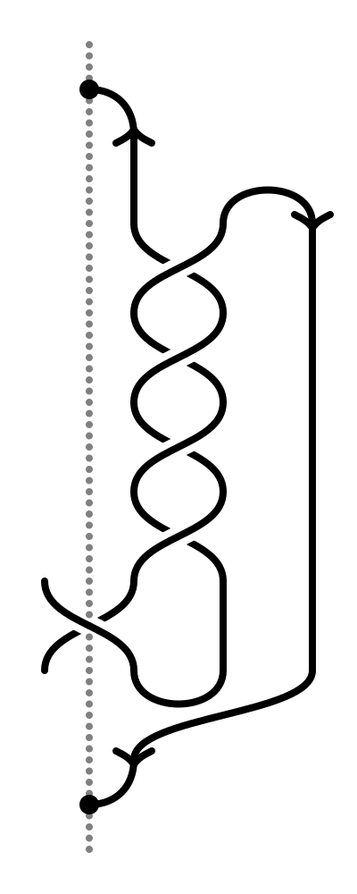

show all invariants|show all metadata
Input data and context

% s.r2.y1.y1.y1.y1.x0.u1
s.r2.y1.y1.y1.y1.x0.u1
,1
% Simplifies with options '-qs' to l1.x0.l1.y2.x1.y2.y3.x0.y1.y2.y2.y3.y1.y2.y2.y3.y1.y2.y2.y1.u0.x0.x0.x0.x0.x0.x0.x0.x0.x0.y1.y0.x1
Bar-Natan multicurve \(\mathrm{\widetilde{BN}}(T)\)
options -c2-qs
(diagram)
(metadata)
% file 'examples/words/w52d579511dd0/cxBNr-c2-qs', generated by kht++ 0.1 on Mon Nov 16 17:41:16 2026 UTC
1) h^ -4 q^-24 δ^ -8 ⬮~~S~>⬯—>⬯~>⬯—>⬯~>⬮—>⬮<~⬯<—⬯<~⬯<—⬯<~⬮<—
2) h^ -2 q^-20 δ^ -8 ⬮~~S~>⬯—>⬯~>⬯—>⬯~>⬮—>⬮<~⬯<—⬯<~⬯<—⬯<~⬮<—
3) h^-16 q^-47 δ^-15/2 ⬯——D—>⬯~>⬯—>⬯~>⬯—>⬯~>⬯—>⬯~>⬯—>⬯~>⬯—>⬯~>⬯—>⬯~>⬯—>⬯~>⬮
Khovanov multicurve \(\mathrm{\widetilde{Kh}}(T)\)
options -c2-qs
(diagram)
(metadata)
% file 'examples/words/w52d579511dd0/cxKhr-c2-qs', generated by kht++ 0.1 on Mon Nov 16 17:41:16 2026 UTC
1) h^ -5 q^-25 δ^-15/2 ⬮~~S~>⬯—>⬯~>⬯—>⬯~>⬮—>⬮<~⬯<—⬯<~⬯<—⬯<~⬮<— s4(∞) q^-20 δ_^-8
2) h^ -4 q^-23 δ^-15/2 ⬮~~S~>⬯—>⬯~>⬯—>⬯~>⬮—>⬮<~⬯<—⬯<~⬯<—⬯<~⬮<— s4(∞) q^-18 δ_^-8
3) h^ -3 q^-21 δ^-15/2 ⬮~~S~>⬯—>⬯~>⬯—>⬯~>⬮—>⬮<~⬯<—⬯<~⬯<—⬯<~⬮<— s4(∞) q^-16 δ_^-8
4) h^ -2 q^-19 δ^-15/2 ⬮~~S~>⬯—>⬯~>⬯—>⬯~>⬮—>⬮<~⬯<—⬯<~⬯<—⬯<~⬮<— s4(∞) q^-14 δ_^-8
5) h^-17 q^-48 δ^ -7 ⬯~~S^2~>⬯—>⬯~>⬯—>⬯~>⬯—>⬯~>⬯—>⬯~>⬯—>⬯~>⬯—>⬯~>⬯—>⬯~>⬯—>⬯~>⬮<—⬮<~⬯<—⬯<~⬯<—⬯<~⬯<—⬯<~⬯<—⬯<~⬯<—⬯<~⬯<—⬯<~⬯<—⬯<~⬯<— r(16) q^-528/17 δ|^-15/2